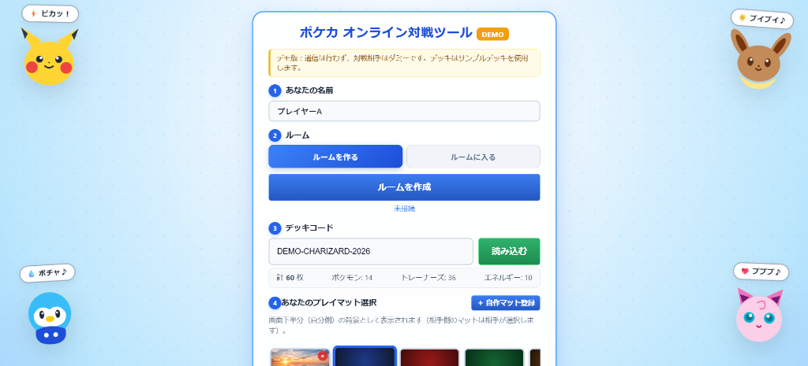
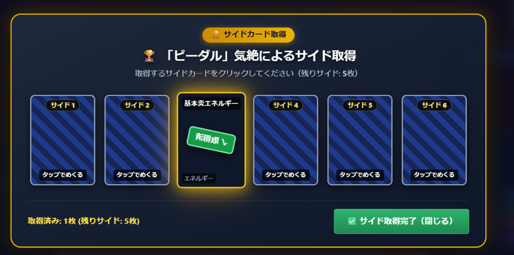
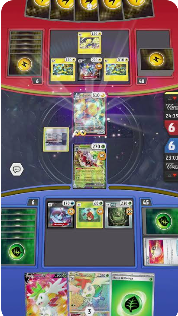
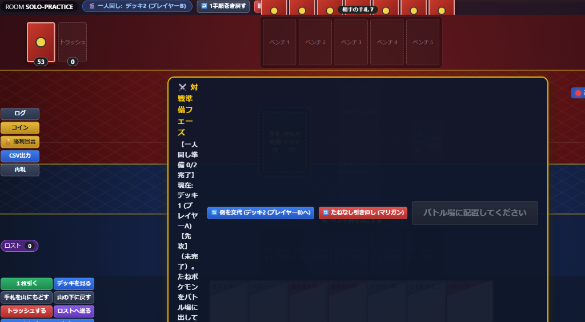
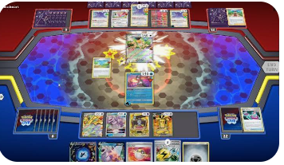
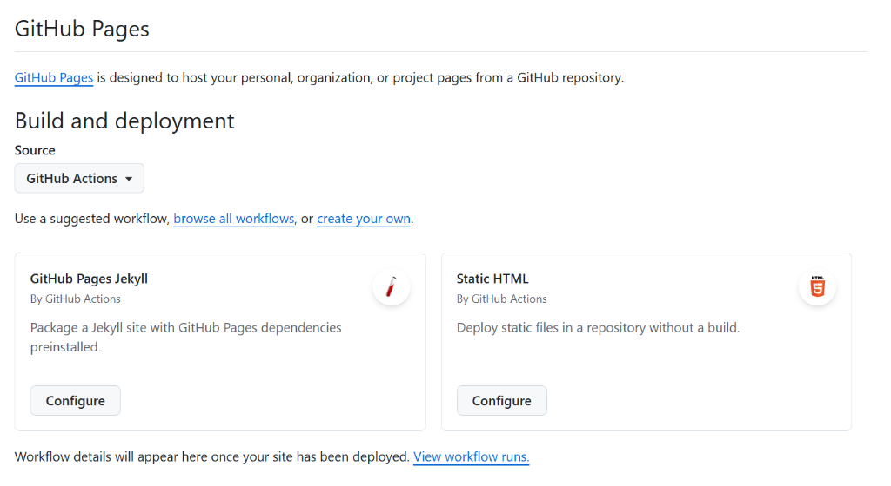
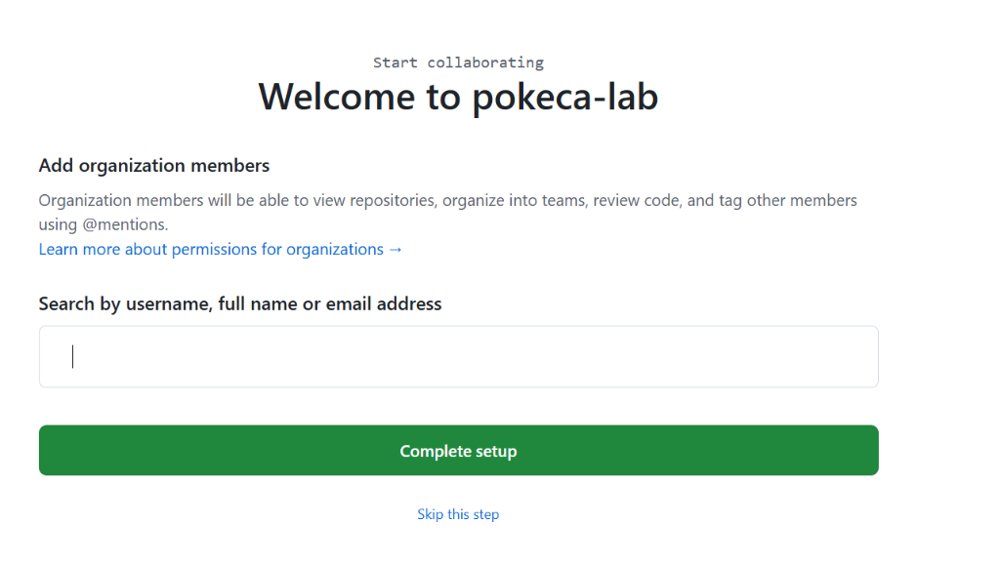

Webブラウザで動く、手動操作型ポケモンカード対戦シミュレーター。
オンライン対戦から一人回し研究まで、実際の画面を交えて分かりやすく解説します。
⚠️ 【最重要】はじめにお読みください
「このツールのカード操作は自動ではありません。
現実のカードを操作をするイメージで自分でカードを操作してください」
本ツールは、ゲームアプリのような複雑な自動ルール判定や強制攻撃処理を行いません。
実際の紙のポケカ対戦と同様に、「山札を引く」「手札からカードを出す」「技や特性を宣言する」「ダメカンを乗せる」「きぜつしてサイドを取る」といった一連の動作を、プレイヤー自身が直感的に動かしながら対戦を進めます。
🔄 対戦の流れフローチャート
※ 各ステップをクリックすると実際の画面写真付き解説へジャンプします
CHAPTER 01
🏠 ロビーでの準備 ＆ 対戦開始
対戦前のロビー画面です。デッキやプレイマット、スリーブを整えて対戦を開始します。

▲ 実際のロビー画面（モード切替、デッキ読み込み、プレイマット選択）
1. 対戦モードの選択
画面上部のタブで、2つのモードを切り替えられます：
- 🌐 オンライン対戦: 友達と6桁のルーム番号を共有し、WebRTC（P2P）直接通信でリアルタイム対戦。
- 🃏 一人回し: 1台の端末で2つのデッキを登録。ターン終了ごとに画面の上下（視点）が自動で入れ替わり、両方の手札や盤面をじっくり一人で研究・練習可能。
2. デッキの読み込み方法
以下の3通りの方法で、実戦デッキを瞬時に読み込めます：
- 公式デッキコード入力: 公式サイトで作成したデッキコード（例:
DEMO-CHARIZARD-2026 や公式英数字コード）を入力して「読み込む」。全60枚の公式画像が自動展開されます。
- テキスト貼り付け: 「📋 テキスト貼付」ボタンを押し、公式デッキ構築画面でコピーしたテキスト（または「リザードンex 3」などの行形式）をそのまま貼り付け。
- サンプルデッキ選択: プルダウンから、環境トップ（悪リザードンex、ドラパルトex、ミライドンexなど）のサンプルデッキをワンクリック選択。
3. プレイマット ＆ スリーブ（カード裏面）のカスタマイズ
自分好みの対戦環境にカスタマイズできます（オンライン対戦相手にもリアルタイムに共有されます）：
- プレイマット選択: 10種類のプリセット ＋ 「＋ 自作マット登録」から手元の画像をアップロード（画面下半分に反映）。
- スリーブ選択（カード裏面）: 公式風、モンスターボール、ハイパーボール等のプリセット ＋ 自作画像をアップロード（サイドや山札、相手から見た手札裏面に反映）。
4. 自動トラッシュ設定
「⚡ 使用したカードを自動でトラッシュする（5秒後）」にチェックを入れておくと、手札から「使用エリア」に出したカードが5秒後にアニメーション付きで自動的にトラッシュへ送られます（デフォルトON）。
CHAPTER 02
⚔️ 対戦準備フェーズの進め方
「対戦開始」を押すと、公式ポケカの対戦準備フェーズが始まります。画面上部に表示される案内バナーの手順に従って進めます。

▲ 実際の対戦準備フェーズ（上部に手順バナー、盤面に裏向きカードをセット）
対戦準備の5つの手順
- コイントス: 「コイントス」ボタンを押し、表（先攻）または裏（後攻）を決定。
- 初期手札7枚の確認: 山札から自動で7枚が手札に引かれます。
- たねポケモンのセット: 手札から「たねポケモン」を1枚バトル場にドラッグ（またはタップ）して裏向きでセット。さらに出したいポケモンがいればベンチにも裏向きで配置します。
- マリガン（たねポケモンがいない場合）: 手札にたねポケモンが1枚もない場合は「マリガン」ボタンを押します。相手に手札が公開され、7枚を引き直します（相手に差分ドロー権利が付与されます）。
- サイドカード6枚のセット ＆ 準備完了: 山札の上から6枚をサイドにセットし、「対戦準備完了」ボタンを押します。双方が完了すると「せーの！オープン！」で一斉にポケモンが表を向いて対戦が始まります！
💡 一人回しモードでの対戦準備:
一人回しモードでは、上部バナーの「🔄 相手側の配置へ切り替え」を押すことで、先攻側・後攻側の両方のたね配置やマリガンを自分の手でじっくり確認・セットできます。
CHAPTER 03
🎮 基本操作ガイド（PCマウス vs スマホタッチ）
パソコンとスマートフォンの両方で快適に対戦できるよう、専用の操作方法が用意されています。
| 操作内容 |
PC（マウス操作） |
スマートフォン（タッチ操作） |
| カードの選択 / 解除 |
左クリック |
タップ |
| カード専用メニューを開く |
右クリック |
長押し（450ms） または 下部メニュー |
| カードの拡大確認 |
ダブルクリック |
タップして拡大ボタン |
| カードの移動 |
ドラッグ ＆ ドロップ |
指で触れてそのままスワイプ移動 |
| 複数カードの同時選択 |
マウスドラッグで四角く囲む（範囲選択） |
手札カードを連続タップ |
| 全体操作メニュー |
右側コントロールパネル |
右下 📱 操作メニュー（アコーディオン式） |

▲ スマートフォンでの対戦画面（縦画面でも片手で操作可能）
CHAPTER 04
🏟️ 盤面・各エリア操作ガイド
実際の対戦画面を見ながら、各エリアの操作を詳しく確認しましょう。

▲ 実際の対戦盤面全体（上側：相手陣地、下側：自陣、右側：操作パネル）
1. 手札 ＆ 「使用エリア」の操作
- ポケモンを場に出す: 手札からバトル場やベンチへドラッグ＆ドロップ、または右クリック/長押しから「バトル場に出す」「ベンチに出す」。
- 進化: 進化ポケモンを進化元のポケモンカードの上に重ねてドロップ。
- グッズ・サポートを使う: カードを「使用エリア」にドロップ、または右クリック/長押しで「使用する」。
- ⚡ 5秒後自動トラッシュ: 使用エリアに出したカードは、5秒後にアニメーション付きで自動的にトラッシュへ送られます。手動で手札や山札に戻した場合は自動キャンセルされます。
- 手札をトラッシュ / 山札へ戻す: カードを選択した状態で下部メニューから実行。カード未選択の状態で押すと、確認ダイアログ付きで手札全カードを一括トラッシュ / 山札シャッフルできます（手札リフレッシュに便利）。
2. バトル場・ベンチのポケモン操作
場のポケモンを右クリック（スマホは長押し）すると、充実した専用メニューが開きます：
- ダメカンの乗せ降ろし: 10 / 50 / 100刻みで連打可能。完了ボタンを押すまでメニューを保持。
- 特殊状態の付与: どく、やけど、まひ、ねむり、こんらん（アニメーションエフェクト付き）。
- 特性「済」マーク: ターン中に特性を使った印として「済」バッジを付与（ターン終了時に自動クリア）。
- ポケモンの山札戻し: 「山札に戻してシャッフル」または「山札の下へ送る」。ついているエネルギーやどうぐも一緒に山札へ戻ります。
- にげる・交代: バトル場のポケモンをベンチへドラッグして入れ替え。
- きぜつさせる: HPが0になったら実行。ポケモンがトラッシュへ送られ、相手画面でサイド取得モーダルが開きます。

▲ ダブルクリック（スマホは拡大ボタン）で高解像度の公式テキストを確認可能
3. 山札（デッキ）の操作
- 1枚引く（ドロー）: 山札をクリックするか、右側/下部メニューの「1枚引く」を押す。
- 山札の中を見る（サーチ）: ネストボールやハイパーボール使用時、「山札を見る」で一覧モーダルを展開。欲しいカードをタップして手札へ直接加えられます。
- シャッフル: 「シャッフル」ボタンで3D空中シャッフル演出とともに山札をランダム化。
- 山札の上をトラッシュ: デッキトップのカードを直接トラッシュへ送る。
4. トラッシュの操作（複数選択 ＆ 一括アクション）
トラッシュをクリックすると、トラッシュ内のカード一覧モーダルが開きます。
カードごとにボタンを押すのではなく、カードをタップして青色発光（選択）させ、ポップアップ下部のアクションバーからまとめて操作できます：
- 🖐️ 手札に戻す: 選択したカードを手札に回収。
- 🔀 山札に戻す: 選択したカードを山札に戻してシャッフル。
- ⚡/🎒 ポケモンにつける: 対象選択画面が開き、バトル場やベンチ1〜8の指定したポケモンへエネルギーやどうぐとして一括装着！
CHAPTER 05
🃏 一人回しモード活用ガイド
大会に向けたデッキの初動確率検証やプレイングの練習に最適な機能が満載です。

▲ 実際の一人回し画面（手番終了ごとに上下の視点が自動反転）
1. ターンの自動視点反転
「ターン終了」ボタンを押すと、画面の上下（自分側と相手側）が自動で入れ替わります。プレイヤーは座る位置を変えることなく、先攻・後攻の双方の手札と盤面を自然に操作できます。
2. 相手手札干渉メニュー（ナンジャモ・ツツジ等）
画面上部の「相手の手札を見る」ボタンから、相手の手札枚数の確認、手札を山札の下に戻してシャッフル、指定枚数ドローといった手札干渉ワザ・サポートを忠実に再現できます。
3. セッション自動セーブ ＆ 中断再開
一人回し中の盤面データはブラウザに常時オートセーブされています。誤ってタブを閉じたりリロードしてしまっても、ロビー画面上部に表示される復元バナーから直前の状態へ瞬時に復元できます。

▲ ロビーに表示される直前の対戦データ復元バナー
CHAPTER 06
💡 便利機能 ＆ よくある質問（FAQ）
1. 試合ログCSV出力 ＆ 試合完全再現（リプレイ）
対戦中のすべての操作（ドロー、配置、ダメカン、トラッシュ等）は棋譜として内部記録されています。
「CSV出力」を押すと対戦データ（CSV）がダウンロードでき、ロビー画面の「📂 試合ログ(CSV)を読み込んで試合を再現」から読み込むことで、最初から最後まで1手ずつ盤面を完全再生して振り返り・検討を行えます。
2. 1手戻す（Undo機能）
操作を誤ってカードを引いてしまった、間違ったポケモンを出してしまった場合、上部またはメニューの「↩️ 1手戻す」を押すことで、直前の状態に巻き戻せます。
3. よくある質問（FAQ）
Q. P2P通信で相手と接続できません。
A. 双方のルーム番号（6桁）が一致しているかご確認ください。また、学校や企業の強固なセキュリティWi-Fi環境下ではWebRTC直接通信が制限される場合があります。一般的な家庭用Wi-Fiやスマートフォンのテザリング環境をお試しください。
Q. 相手の画面に自分のカードの動きが反映されません。
A. 一時的な通信切断の可能性があります。右上の「経路確認」ボタンを押してPing疎通テストメッセージを送信するか、ルームの再接続をお試しください。
Q. 新しい機能が画面に反映されていないようです。
A. ブラウザのキャッシュが残っている可能性があります。PCの場合は Ctrl + F5（Macは Cmd + Shift + R）、スマートフォンの場合はブラウザの「再読み込み」を行ってください。